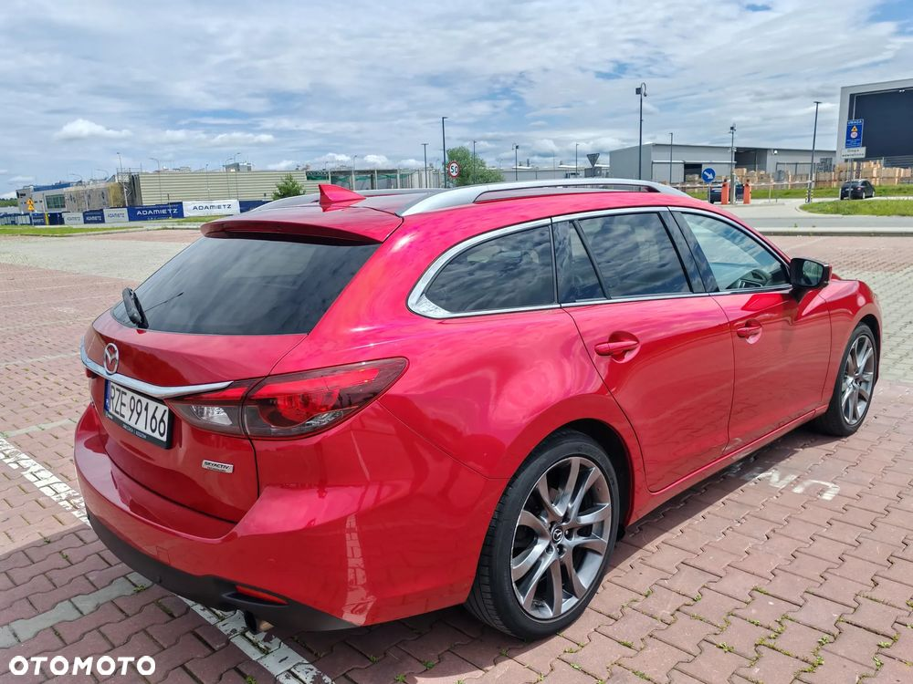

Mazda 6 Kombi 2.5 Benzyna Automat | SkyPASSION | Full opcja | 2016 | 185 tys. km
Na sprzedaż oferuję Mazdę 6 w nadwoziu kombi z dynamicznym i niezawodnym silnikiem benzynowym 2.5 (192 KM) oraz automatyczną skrzynią biegów. Auto w najbogatszej wersji wyposażenia SkyPASSION, w świetnym stanie technicznym i wizualnym.
Rok produkcji: 2016, pierwsza rejestracja 2017
Silnik: 2.5 benzyna, 192 KM
Skrzynia: automat (6-biegowy, klasyczny hydrokinetyczny)
Nadwozie: kombi
Bezwypadkowy, zadbany, serwisowany
Wyposażenie – Full opcja SkyPASSION:
Skórzana tapicerka
Fotele elektryczne, podgrzewane (przód)
System nagłośnienia Bose
Nawigacja + system multimedialny z ekranem dotykowym
Kamera cofania + czujniki przód/tył
System bezkluczykowy
Reflektory LED adaptacyjne
Systemy wspomagające: asystent pasa ruchu, monitor martwego pola, czujnik zmierzchu i deszczu
Felgi aluminiowe 19”
Tempomat
Dwustrefowa klimatyzacja automatyczna
System Start/Stop
i wiele więcej…
Stan techniczny:
Auto zadbane, wszystko działa bez zarzutu, brak jakichkolwiek ukrytych usterek. Regularnie serwisowane. Świeżo po przeglądzie. Silnik, skrzynia i zawieszenie w bardzo dobrym stanie. Gotowe do jazdy.
